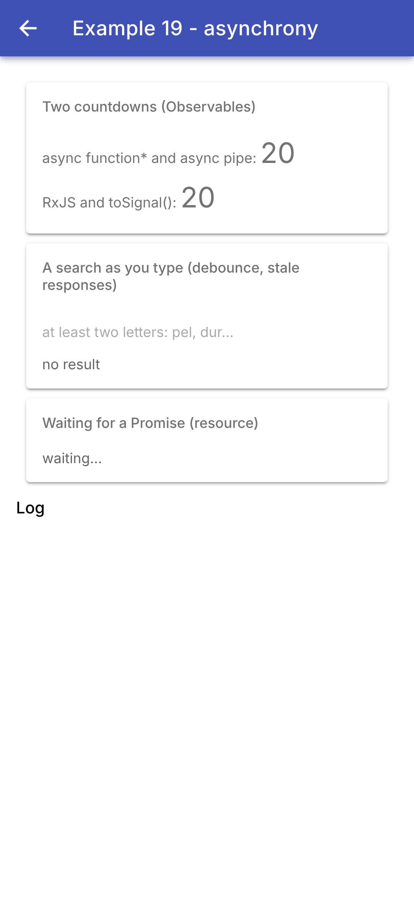

6. Operaciones asíncronas y estado compartido
6.1. Ejemplo 19: promesas, observables y temporizadores
Muchas cosas suceden “más tarde”: los ticks de un temporizador, las pulsaciones de teclas y las respuestas del servidor. Una aplicación [Ionic] tiene dos tipos para esto:
- [Promise<T>], el de [JavaScript]: UN valor, más tarde (una respuesta del servidor, una selección hecha en una ventana). Las palabras clave [async] y [await] permiten esperarlo sin bloquear la aplicación. Es el [Future] de [Dart];
- [Observable<T>], que proviene de la biblioteca [RxJS], incluida con [Angular]: una SECUENCIA de valores, a lo largo del tiempo (ticks, pulsaciones de teclas, mensajes...), que se transforman mediante operadores ([map], [take], [debounceTime], [switchMap]...). Es el [Stream] derivado de [Dart]. [JavaScript] también tiene sus equivalentes asíncronos: los generadores asíncronos ([async function*]), que son los equivalentes de las funciones [async*] de [Dart].
Para mostrarlos, [Angular] ofrece tres herramientas, equivalentes de [FutureBuilder] y [StreamBuilder]: el pipe [async] (un [Observable] leído desde la plantilla), [toSignal()] (un [Observable] convertido en signal) y [resource()] (una [Promise] convertida en signals). Y para lo que debe ocurrir después de un retraso: [setTimeout], o los temporizadores de [RxJS] ([timer], [interval]).
6.1.1. La página
| // =========================================================================
// src/app/ex19-asynchronous/ex19.page.ts - promesas, observables, temporizadores
// -------------------------------------------------------------------------
// Muchas cosas ocurren "más tarde": los ticks de un temporizador, las
// pulsaciones de teclas, la respuesta de un servidor. Hay dos tipos disponibles:
// - Promise (JavaScript): UN valor, más tarde (la respuesta de un
// servidor); async / await para esperarlo;
// - Observable (biblioteca RxJS, incluida con Angular): una SECUENCIA de
// valores, a lo largo del tiempo (ticks, pulsaciones...), que se transforman
// con "operadores" (map, take, debounceTime, switchMap...).
// Para mostrarlos, Angular ofrece el pipe async (un Observable en la
// plantilla), toSignal() (un Observable convertido en señal) y resource() (una
// Promise convertida en señal).
// =========================================================================
import { AsyncPipe } from '@angular/common';
import { Component, resource, signal } from '@angular/core';
import { takeUntilDestroyed, toSignal } from '@angular/core/rxjs-interop';
import {
IonBackButton, IonButtons, IonCard, IonCardContent, IonCardHeader, IonCardSubtitle, IonContent, IonHeader, IonInput,
IonNote, IonTitle, IonToolbar,
} from '@ionic/angular';
import { debounceTime, finalize, from, map, Observable, of, Subject, switchMap, take, tap, timer } from 'rxjs';
const doctors = ['Marie PELISSIER', 'Paul TATOU', 'Sophie DUPONT', 'Jacques DURAND', 'Martine PELLETIER'];
// un temporizador en forma de Promise: termina después de ms milisegundos
function wait(ms: number): Promise<void> {
return new Promise((resolve) => setTimeout(resolve, ms));
}
// un "servidor" simulado: la respuesta (una Promise) llega después de un retraso aleatorio
async function search(text: string): Promise<string[]> {
await wait(200 + Math.floor(Math.random() * 600));
return doctors.filter((m) => m.toLowerCase().includes(text));
}
// 1a. un GENERADOR ASÍNCRONO (async function*, con asterisco): cada
// yield ENVÍA un valor a quien lo itera (for await...of)
async function* countdown(start: number): AsyncGenerator<number> {
for (let remaining = start; remaining >= 0; remaining--) {
yield remaining;
if (remaining > 0) await wait(1000);
}
}
// "15:30:45"
const currentTime = () => new Date().toTimeString().substring(0, 8);
@Component({
selector: 'app-ex19',
imports: [
AsyncPipe, IonHeader, IonToolbar, IonButtons, IonBackButton, IonTitle, IonContent, IonCard, IonCardHeader,
IonCardSubtitle, IonCardContent, IonInput, IonNote,
],
templateUrl: './ex19.page.html',
styles: `
.number { font-size: 2em; color: var(--ion-text-color); }
.log { font-size: 12px; }
`,
})
export class Ex19Page {
readonly log = signal<string[]>([]);
// 1a. el generador, convertido en Observable por from(); la plantilla
// lo muestra con el pipe async. Creado UNA SOLA VEZ, en un campo
readonly countdown$: Observable<number> = from(countdown(20));
// 1b. la misma cuenta regresiva, con operadores RxJS: timer(0, 1000)
// emite 0, 1, 2... cada segundo; take(21) se detiene tras 21 valores;
// map los transforma (0 -> 20, 1 -> 19...). toSignal: una señal cuyo valor es
// el último valor recibido (undefined antes del primero)
readonly countdown = toSignal(timer(0, 1000).pipe(take(21), map((i) => 20 - i)));
// 3. una Promise que termina después de un segundo, seguida de resource():
// un objeto con señales (isLoading(), hasValue(), value(), error()...)
readonly message = resource({
loader: async () => {
await wait(1000);
return 'three (one second later)';
},
});
// 2. la búsqueda mientras se escribe: un Subject es un Observable en el
// que EMPUJAMOS los valores nosotros mismos (next): aquí, cada pulsación de tecla
private readonly keystrokes = new Subject<string>();
readonly results = signal<string[]>([]);
constructor() {
this.keystrokes
.pipe(
// el DEBOUNCE: un valor solo se transmite después de 400 ms sin
// una nueva pulsación; las pulsaciones más cercanas se olvidan
debounceTime(400),
map((text) => text.trim().toLowerCase()),
// switchMap: cada texto inicia una búsqueda (un Observable); una
// NUEVA búsqueda ABANDONA la anterior, cuya respuesta
// nunca se transmitirá: ninguna respuesta "obsoleta"
switchMap((text) => this.launch(text)),
// la suscripción termina cuando se destruye la página
takeUntilDestroyed(),
)
.subscribe((found) => this.results.set(found));
}
private trace(message: string): void {
this.log.update((lines) => [...lines, `${currentTime()} ${message}`]);
}
// llamado en cada pulsación de tecla
input(text: string | null | undefined): void {
this.keystrokes.next(text ?? '');
}
private launch(text: string): Observable<string[]> {
// menos de dos letras: sin búsqueda, sin resultado
if (text.length < 2) {
return of([]);
}
this.trace(`search sent: "${text}"`);
let received = false;
// from(Promise): un Observable que emite el valor de la Promise y luego se completa
return from(search(text)).pipe(
tap(() => (received = true)),
// finalize: llamado cuando el Observable se completa O cuando nos damos de baja de él
// (eso es lo que hace switchMap cuando llega una nueva búsqueda)
finalize(() => {
if (!received) this.trace(`response ignored (stale): "${text}"`);
}),
);
}
}
|
| <!-- ======================================================================
ex19.page.html - promesas, observables y temporizadores
====================================================================== -->
<ion-header>
<ion-toolbar color="primary">
<ion-buttons slot="start">
<ion-back-button defaultHref="/" />
</ion-buttons>
<ion-title>Example 19 - asynchrony</ion-title>
</ion-toolbar>
</ion-header>
<ion-content class="ion-padding">
<ion-card>
<ion-card-header>
<ion-card-subtitle>Two countdowns (Observables)</ion-card-subtitle>
</ion-card-header>
<ion-card-content>
<!-- el pipe async se suscribe al Observable, muestra cada nuevo
valor, y cancela la suscripción cuando la página desaparece; es null
antes del primer valor. @let: una variable de plantilla -->
@let n = countdown$ | async;
<p>async function* and async pipe: <span class="number">{{ n ?? '...' }}</span></p>
<!-- la señal: undefined antes del primer valor -->
<p>RxJS and toSignal(): <span class="number">{{ countdown() ?? '...' }}</span></p>
</ion-card-content>
</ion-card>
<ion-card>
<ion-card-header>
<ion-card-subtitle>A search as you type (debounce, stale responses)</ion-card-subtitle>
</ion-card-header>
<ion-card-content>
<!-- (ionInput): en cada pulsación de tecla -->
<ion-input placeholder="at least two letters: pel, dur..." (ionInput)="input($event.detail.value)" />
@for (r of results(); track r) {
<p>• {{ r }}</p>
} @empty {
<ion-note>no result</ion-note>
}
</ion-card-content>
</ion-card>
<ion-card>
<ion-card-header>
<ion-card-subtitle>Waiting for a Promise (resource)</ion-card-subtitle>
</ion-card-header>
<ion-card-content>
<!-- mientras la Promise no haya terminado: el contenido de espera -->
@if (message.hasValue()) {
<p>received: {{ message.value() }}</p>
} @else {
<ion-note>waiting...</ion-note>
}
</ion-card-content>
</ion-card>
<h6>Log</h6>
@for (line of log(); track $index) {
<div class="log">{{ $index + 1 }}. {{ line }}</div>
}
</ion-content>
|
Herramientas:
- líneas 28–30 (.ts): un temporizador en forma de [Promise]. [new Promise(...)] recibe una función que inicia la tarea y llamará a [resolve] cuando termine; aquí, [setTimeout] la llama después de [ms] milisegundos. [await wait(1000)] espera, por lo tanto, un segundo, sin bloquear la aplicación (esto era [Future.delayed] con [Dart]);
- líneas 33–36 (.ts): un “servidor” simulado: una función [async], que devuelve una [Promise]; su respuesta llega después de un retraso aleatorio (entre 200 y 800 milisegundos);
- líneas 40–45 (.ts): un generador asíncrono: una función [async function*] (con un asterisco). Cada [yield] entrega un valor a quien recorre el generador; entre dos valores, la función espera un segundo. Se puede recorrer mediante un bucle [for await (const n of countdown(20))].
La primera cuenta regresiva:
- línea 67 (.ts): el generador, convertido en [Observable] mediante [from()], que acepta un generador asíncrono, una [Promise], un arreglo... Por convención, el nombre de una variable que contiene un [Observable] termina con [$];
- Línea 23 (HTML): el pipe [async] se suscribe al [Observable], muestra cada nuevo valor y cancela la suscripción automáticamente cuando se cierra la página; vale [null] antes de recibir el primer valor. [@let n = ...] declara una variable de plantilla, leída en la línea 24 ([n ?? '...']: tres puntos mientras [n] sea igual a [null]). Como con [Flutter], el [Observable] se crea UNA SOLA VEZ en un campo de la clase: si la plantilla llamara a un método que lo creara, ¡cada actualización de la pantalla reiniciaría la cuenta regresiva!
La segunda, con los operadores de [RxJS]:
- línea 73 (.ts): [timer(0, 1000)] emite 0 de inmediato y luego 1, 2, 3... cada segundo; el método [pipe] le aplica operadores, uno tras otro: [take(21)] conserva solo los primeros 21 valores (luego el [Observable] termina); [map] transforma cada valor (0 se convierte en 20, 1 en 19...). [toSignal] se suscribe al [Observable] y lo convierte en una signal, que es igual al último valor recibido ([undefined] antes del primero); cancela la suscripción cuando se destruye la página;
- línea 26 (HTML): la signal se lee como cualquier otra signal.
La [Promise] esperada:
- líneas 77–82 (.ts): [resource()] recibe una función [loader] que devuelve una [Promise], la invoca y expone su estado como signals: [isLoading()], [hasValue()], [value()], [error()]. Si proporcionáramos una opción [params]—una función que lee signals—, el recurso se recargaría cada vez que estas cambien (el [loader], en cambio, no se monitorea): la usaremos para consultar un servidor;
- líneas 51–55 (HTML): mientras la [Promise] no haya terminado, el contenido provisional; después, su valor (esto era [FutureBuilder] y [ConnectionState.done]).
Búsqueda mientras se escribe:
- línea 86 (.ts): un [Subject] es un [Observable] al que nosotros mismos EMPUJAMOS los valores ([next]): aquí, cada pulsación de tecla (líneas 111–113, activadas por el evento [(ionInput)] del campo, línea 36 del HTML);
- línea 94 (.ts): antirrebote (debouncing): esperamos a que el usuario haga una pausa antes de consultar al servidor, en lugar de enviar una solicitud por cada pulsación de tecla. El operador [debounceTime(400)] solo emite un valor después de 400 milisegundos sin un nuevo valor: las pulsaciones demasiado seguidas se ignoran. Con [Flutter], había que cancelar y reiniciar manualmente un temporizador ([Timer]) con cada pulsación de tecla;
- línea 95 (.ts): el texto, sin espacios alrededor, en minúsculas;
- línea 99 (.ts): respuestas caducadas. Una respuesta que llega DESPUÉS de que se haya lanzado otra búsqueda debe ignorarse: de lo contrario, la respuesta lenta de una búsqueda antigua sobrescribiría la de la nueva. El operador [switchMap] se encarga de esto: para cada texto, llama a [launch], que devuelve un [Observable] (la búsqueda); cuando llega un nuevo texto, CANCELA LA SUSCRIPCIÓN, anulando la búsqueda anterior —cuya respuesta nunca se transmitirá— y luego lanza la nueva. Con [Flutter], era necesario numerar las búsquedas y comparar los números;
- Línea 101 (.ts): [takeUntilDestroyed()] finaliza la suscripción cuando se destruye la página: sin él, [Subject] y sus operadores seguirían existiendo (era el [dispose] de [Flutter]). Debe llamarse dentro de un “contexto de inyección”: en este caso, el constructor;
- línea 103 (.ts): [subscribe] se suscribe al [Observable]: no pasa nada hasta que alguien se suscribe. Cada lista de resultados se almacena en una signal, que la plantilla muestra (líneas 37–41 del HTML);
- líneas 117–119 (.ts): menos de dos letras: no hay búsqueda; [of([])] es un [Observable] que devuelve de inmediato una lista vacía;
- líneas 123–130 (.ts): la búsqueda: la [Promise] del servidor, transformada en [Observable] mediante [from()]. [tap] realiza una acción de paso, sin modificar el valor: anota que la respuesta ha llegado. [finalize] se invoca cuando el [Observable] termina, o cuando el usuario cancela su suscripción: si la respuesta no llegó, significa que [switchMap] abandonó esta búsqueda, y esto se registra en el log.
Escribimos “p”, “pe” y “pel” rápidamente: se envía una sola búsqueda. Luego “du”, seguido de “dup” antes de que llegue la respuesta a “du”: la búsqueda de “du” se abandona (su respuesta se ignora) en el momento en que se envía la búsqueda de “dup”. A la izquierda, la página al abrirse; a la derecha, cinco segundos después:
 |  |
En el log, la línea “response ignored” precede a la línea “search sent: ‘dup’”: [switchMap] cancela la suscripción a la búsqueda antigua antes de lanzar la nueva.
En [Dart], [Future] y [Stream] están en la biblioteca base, y [async], [await], [async*], [yield] y [await for] están en el lenguaje. En [JavaScript], [Promise], [async], [await] y los generadores asíncronos también forman parte del lenguaje; pero para las secuencias de valores, [Angular] se apoya en la biblioteca [RxJS], cuyos cien o más operadores resuelven problemas como el antirrebote y las respuestas caducadas en una sola línea. El cliente HTTP de [Angular] (ejemplos 22 a 25) también devuelve [Observable]. Desde la llegada de las signals, [Angular] reserva [RxJS] para los flujos de eventos y usa [toSignal] o [resource] para mostrarlos.
6.2. Ejemplo 20: un estado compartido
La misma pregunta que en las lecciones anteriores: ¿cuáles son los “ámbitos” de los datos de una aplicación?
- El estado local de un componente desaparece cuando el componente se destruye;
- el estado de un “store” es compartido por todos los componentes y sobrevive a su eliminación… pero no al cierre de la aplicación;
- El estado almacenado en el dispositivo sobrevive al cierre de la aplicación.
6.2.1. El carrito de compras
| // =========================================================================
// src/app/ex20-shared-state/stores/cart.ts - un ESTADO COMPARTIDO: un servicio
// -------------------------------------------------------------------------
// Un "store" es un estado que vive FUERA de las páginas y de los
// componentes, en UNA SOLA instancia, compartida por todos los que lo leen.
// En Angular, es un SERVICIO (véase el ejemplo 14) cuyo estado está formado por
// SEÑALES. Organización habitual:
// - el ESTADO: señales PRIVADAS (_items);
// - su lectura: vistas de solo lectura (asReadonly);
// - las ACCIONES: métodos, los únicos que modifican el estado;
// - los valores calculados: señales computed.
// Un componente lo obtiene con inject(Cart); su plantilla, que lee las
// señales, se actualiza cuando ESTAS cambian, y solo ellas.
// providedIn: 'root': el servicio se crea en la primera solicitud y vive
// mientras viva la aplicación: sobrevive a la eliminación de un componente... pero
// no a la detención de la aplicación.
// =========================================================================
import { computed, Injectable, signal } from '@angular/core';
export interface Item {
label: string;
price: number;
}
@Injectable({ providedIn: 'root' })
export class Cart {
private readonly _items = signal<Item[]>([]);
// una vista NO MODIFICABLE del estado: solo las acciones lo cambian
readonly items = this._items.asReadonly();
readonly count = computed(() => this._items().length);
readonly total = computed(() => this._items().reduce((s, a) => s + a.price, 0));
add(item: Item): void {
// un arreglo NUEVO: la señal ve que su valor ha cambiado
this._items.update((items) => [...items, item]);
}
clear(): void {
this._items.set([]);
}
}
|
Un store es un estado que abarca páginas y componentes, y existe como una única instancia compartida por todos los que acceden a él. Con [Angular], es simplemente un servicio (véase el Ejemplo 14) cuyo estado consiste en signals: no hay que agregar ninguna biblioteca, mientras que [Flutter] usaba el paquete [provider] en torno a un [ChangeNotifier].
- línea 26: [providedIn: 'root']: el servicio se crea en su primera solicitud ([inject(Cart)]), como una única instancia, y permanece activo mientras la aplicación esté en ejecución;
- línea 28: el estado: una signal privada;
- Línea 30: una vista de solo lectura del estado ([asReadonly()]): solo las acciones lo modifican;
- Líneas 31–32: valores calculados: signals [computed], recalculadas solo cuando cambia la lista de artículos;
- Líneas 34–41: acciones: métodos, que son los únicos que modifican el estado. Línea 36: un arreglo NUEVO ([...items] copia los artículos), no [push] como en la versión anterior: una signal compara los valores antiguo y nuevo ([===]) y notifica a sus suscriptores solo si difieren. No es necesario escribir [notifyListeners()]: la signal se encarga de la notificación.
6.2.2. Preferencias
| // =========================================================================
// src/app/ex20-shared-state/stores/preferences.ts - un estado que sobrevive a la detención
// -------------------------------------------------------------------------
// Para que un dato sobreviva a la detención de la aplicación, debe almacenarse
// EN EL DISPOSITIVO. El "plugin" @capacitor/preferences ofrece un pequeño
// diccionario clave -> valor (cadenas), propio de la aplicación y
// conservado en el dispositivo (Android: las SharedPreferences; en un
// navegador: el localStorage). Todos sus métodos son ASÍNCRONOS
// (devuelven una Promise):
// - al iniciar, se leen los valores almacenados;
// - en cada cambio, se vuelven a escribir.
// NUNCA se almacenan allí datos sensibles (contraseña, token): se
// escriben en texto plano.
// =========================================================================
import { effect, Injectable, signal } from '@angular/core';
// "as DeviceStorage": renombrado, para no confundirlo con nuestra clase
import { Preferences as DeviceStorage } from '@capacitor/preferences';
const darkKey = 'example20.dark';
const sizeKey = 'example20.size';
@Injectable({ providedIn: 'root' })
export class Preferences {
// el estado inicial: los valores por defecto, a la espera de la lectura
private readonly _dark = signal(false);
private readonly _size = signal(16); // tamaño del texto
readonly dark = this._dark.asReadonly();
readonly size = this._size.asReadonly();
constructor() {
this.load();
// un EFECTO: una función que se vuelve a ejecutar cada vez que cambia una señal que
// lee. Aplica las preferencias a TODA la aplicación:
// - la clase ion-palette-dark en <html>: el tema oscuro de Ionic
// (véase styles.scss);
// - el tamaño de fuente de <html>: los componentes de Ionic tienen
// tamaños en rem (múltiplos de este tamaño), por lo que lo siguen
effect(() => {
document.documentElement.classList.toggle('ion-palette-dark', this._dark());
document.documentElement.style.fontSize = `${this._size()}px`;
});
}
// lo que el dispositivo ha almacenado (value es null si la clave no existe)
private async load(): Promise<void> {
const dark = await DeviceStorage.get({ key: darkKey });
const size = await DeviceStorage.get({ key: sizeKey });
if (dark.value !== null) this._dark.set(dark.value === 'true');
if (size.value !== null) this._size.set(Number(size.value));
}
// un parámetro opcional por preferencia: solo se cambia lo que se proporciona
update({ dark, size }: { dark?: boolean; size?: number }): void {
if (dark !== undefined) {
this._dark.set(dark);
DeviceStorage.set({ key: darkKey, value: String(dark) }); // escritura en el dispositivo
}
if (size !== undefined) {
this._size.set(size);
DeviceStorage.set({ key: sizeKey, value: String(size) });
}
}
}
|
Para que los datos sobrevivan después de cerrar la aplicación, deben almacenarse en el dispositivo. El “plugin” [@capacitor/preferences] de [Capacitor] ofrece un pequeño diccionario de clave a valor (de cadenas), específico de la aplicación y almacenado en el dispositivo: las [SharedPreferences] de [Android] (las que usa el paquete [shared_preferences] de [Flutter]) y, en un navegador, [localStorage]. Todos sus métodos son asíncronos: devuelven una [Promise].
- línea 18: el plugin también se llama [Preferences]; [as DeviceStorage] lo renombra en este archivo para evitar confusiones con nuestra clase;
- Líneas 26–29: el estado inicial, con signals establecidas en sus valores predeterminados, y sus vistas de solo lectura;
- línea 32: la lectura del dispositivo comienza cuando se crea el servicio. Es asíncrona: durante un breve momento se aplican los valores predeterminados;
- líneas 39–42: un efecto ([effect]): una función que se vuelve a ejecutar cada vez que cambia una signal que lee. Aplica las preferencias a TODA la aplicación: la clase CSS [ion-palette-dark] en la etiqueta [<html>] activa el tema oscuro en [Ionic] (definido en [styles.scss]); el tamaño de fuente en [<html>] agranda el texto, porque los componentes de [Ionic] expresan sus tamaños en [rem] (como múltiplos de ese tamaño). Un efecto sirve para esto: retransmitir signals al mundo exterior (DOM, almacenamiento, etc.); no debe usarse para calcular otras signals ([computed] está diseñado para eso);
- líneas 46–51: operación de lectura del dispositivo: [DeviceStorage.get] devuelve una [Promise] de [{ value }], donde [value] es igual a [null] si la clave no existe. Los valores son cadenas: se convierten;
- líneas 54–63: una única acción con parámetros opcionales (un objeto desestructurado: [{ dark, size }]): solo se cambia el valor proporcionado, y se escribe de inmediato en el dispositivo ([DeviceStorage.set]). No esperamos a que termine la escritura: la signal ya ha cambiado.
NUNCA almacene datos sensibles (contraseñas, tokens) allí: se escriben en texto plano. Para ello existen plugins que usan la bóveda del sistema ([Keystore] de [Android], [Keychain] de [iOS]).
6.2.3. Los componentes
| // =========================================================================
// src/app/ex20-shared-state/components/shop.ts - AGREGA al carrito compartido
// -------------------------------------------------------------------------
// La tienda solo LLAMA a una acción del carrito; su plantilla no lee
// ninguna señal del carrito: no se actualiza cuando el carrito cambia.
// =========================================================================
import { CurrencyPipe } from '@angular/common';
import { Component, inject } from '@angular/core';
import { IonButton, IonCard, IonCardContent, IonCardHeader, IonCardSubtitle, IonIcon } from '@ionic/angular';
import { addIcons } from 'ionicons';
import { add } from 'ionicons/icons';
import { Item, Cart } from '../stores/cart';
const products: Item[] = [
{ label: 'Consultation', price: 30 },
{ label: 'Vaccine', price: 12.5 },
];
@Component({
selector: 'app-ex20-shop',
imports: [CurrencyPipe, IonCard, IonCardHeader, IonCardSubtitle, IonCardContent, IonButton, IonIcon],
templateUrl: './shop.html',
})
export class Shop {
readonly products = products;
// el MISMO carrito que el de los demás componentes (una sola instancia)
readonly cart = inject(Cart);
constructor() {
addIcons({ add });
}
}
|
| <!-- ======================================================================
shop.html - dos productos para agregar al carrito
====================================================================== -->
<ion-card>
<ion-card-header>
<ion-card-subtitle>Shop</ion-card-subtitle>
</ion-card-header>
<ion-card-content>
@for (p of products; track p.label) {
<ion-button fill="clear" (click)="cart.add(p)">
<ion-icon slot="start" name="add" />
{{ p.label }} ({{ p.price | currency: 'EUR' }})
</ion-button>
}
</ion-card-content>
</ion-card>
|
- línea 28 (.ts): [inject(Cart)] devuelve el MISMO carrito de compras que los demás componentes;
- línea 11 (html): la tienda simplemente llama a una acción. Su plantilla no lee ninguna signal del carrito de compras: no se actualiza cuando este cambia (esto era [context.read<Cart>()] con [provider]);
- línea 13 (html): el pipe [currency] formatea el precio al estilo inglés (véase el ejemplo 09).
| // =========================================================================
// src/app/ex20-shared-state/components/cart-summary.ts - LEE el mismo carrito
// -------------------------------------------------------------------------
// La plantilla lee dos señales del carrito, count() y total(): se actualiza
// cuando UNA de ellas cambia, y solo entonces.
// =========================================================================
import { CurrencyPipe } from '@angular/common';
import { Component, inject } from '@angular/core';
import { IonButton, IonCard, IonIcon, IonItem, IonLabel } from '@ionic/angular';
import { addIcons } from 'ionicons';
import { cart } from 'ionicons/icons';
import { Cart } from '../stores/cart';
@Component({
selector: 'app-ex20-cart-summary',
imports: [CurrencyPipe, IonCard, IonItem, IonIcon, IonLabel, IonButton],
templateUrl: './cart-summary.html',
})
export class CartSummary {
readonly cart = inject(Cart);
constructor() {
addIcons({ cart });
}
}
|
| <!-- ======================================================================
cart-summary.html - el número de artículos y el total del carrito
====================================================================== -->
<ion-card>
<ion-item lines="none">
<ion-icon slot="start" name="cart" />
<ion-label>{{ cart.count() }} item(s), {{ cart.total() | currency: 'EUR' }}</ion-label>
<ion-button slot="end" fill="clear" [disabled]="cart.count() === 0" (click)="cart.clear()">
Clear
</ion-button>
</ion-item>
</ion-card>
|
- Líneas 8–9 (HTML): la plantilla lee dos signals del carrito de compras, [count()] y [total()]: se actualiza cuando cualquiera de ellas cambia, y solo entonces. Con [provider], había que elegir entre [context.watch] (todo el carrito de compras) y [context.select] (un solo artículo); con las signals, la precisión es automática: depende de lo que se lee.
| // =========================================================================
// src/app/ex20-shared-state/components/local-counter.ts - un estado LOCAL
// -------------------------------------------------------------------------
// La señal clicks pertenece al componente: nace con él y desaparece
// con él.
// =========================================================================
import { Component, input, signal } from '@angular/core';
import { IonButton, IonCard, IonItem, IonLabel } from '@ionic/angular';
@Component({
selector: 'app-ex20-local-counter',
imports: [IonCard, IonItem, IonLabel, IonButton],
templateUrl: './local-counter.html',
})
export class LocalCounter {
readonly title = input.required<string>();
readonly clicks = signal(0);
}
|
| <!-- ======================================================================
local-counter.html - un contador de clics
====================================================================== -->
<ion-card>
<ion-item lines="none">
<ion-label>{{ title() }}</ion-label>
<ion-button slot="end" fill="outline" (click)="clicks.set(clicks() + 1)">{{ clicks() }} click(s)</ion-button>
</ion-item>
</ion-card>
|
Un estado local (línea 18 del archivo .ts), que se crea y se destruye junto con el componente.
6.2.4. La página
| // =========================================================================
// src/app/ex20-shared-state/ex20.page.ts - tres "ámbitos" de datos
// -------------------------------------------------------------------------
// - el estado LOCAL de un componente (LocalCounter) desaparece con él;
// - el estado de un SERVICIO (el carrito) es compartido por todos los componentes
// y sobrevive a su eliminación, pero no a la detención de la aplicación;
// - el estado almacenado en el dispositivo (las preferencias) sobrevive a la detención.
// Y la clase CSS ion-hide: el contenido se OCULTA, pero no se elimina; su
// estado local se conserva.
// Desmarque y vuelva a marcar "mostrar el área", luego detenga y reinicie
// la aplicación: compare.
// =========================================================================
import { Component, inject, signal } from '@angular/core';
import {
IonBackButton, IonButtons, IonCheckbox, IonContent, IonHeader, IonItem, IonLabel, IonList, IonRange, IonTitle,
IonToggle, IonToolbar,
} from '@ionic/angular';
import { Shop } from './components/shop';
import { LocalCounter } from './components/local-counter';
import { CartSummary } from './components/cart-summary';
import { Preferences } from './stores/preferences';
@Component({
selector: 'app-ex20',
imports: [
IonHeader, IonToolbar, IonButtons, IonBackButton, IonTitle, IonContent, IonList, IonItem, IonLabel, IonToggle,
IonRange, IonCheckbox, Shop, CartSummary, LocalCounter,
],
templateUrl: './ex20.page.html',
})
export class Ex20Page {
readonly preferences = inject(Preferences);
// un estado local de la página
readonly areaVisible = signal(true);
}
|
| <!-- ======================================================================
ex20.page.html - un estado compartido
====================================================================== -->
<ion-header>
<ion-toolbar color="primary">
<ion-buttons slot="start">
<ion-back-button defaultHref="/" />
</ion-buttons>
<ion-title>Example 20 - a shared state</ion-title>
</ion-toolbar>
</ion-header>
<ion-content class="ion-padding">
<ion-list>
<ion-item>
<!-- [checked]: el valor del servicio; (ionChange): la acción que lo modifica -->
<ion-toggle [checked]="preferences.dark()"
(ionChange)="preferences.update({ dark: $event.detail.checked })">dark theme</ion-toggle>
</ion-item>
<ion-item>
<!-- snaps / ticks: marcas, en cada paso -->
<ion-range [min]="12" [max]="22" [step]="1" [snaps]="true" [ticks]="true" [value]="preferences.size()"
(ionChange)="preferences.update({ size: +$event.detail.value })">
<ion-label slot="label">text size: {{ preferences.size() }}</ion-label>
</ion-range>
</ion-item>
<ion-item>
<ion-checkbox [checked]="areaVisible()" (ionChange)="areaVisible.set($event.detail.checked)">
show the area</ion-checkbox>
</ion-item>
</ion-list>
<!-- eliminados: estos componentes desaparecen, con su estado local -->
@if (areaVisible()) {
<app-ex20-shop />
<app-ex20-cart-summary />
<app-ex20-local-counter title="Local state" />
}
<!-- oculto (ion-hide: display none): el componente permanece en memoria, su estado se conserva -->
<app-ex20-local-counter title="Local state, hidden by a CSS class" [class.ion-hide]="!areaVisible()" />
<p>Outside the area, a second summary of the SAME cart (it stays there when the area disappears):</p>
<app-ex20-cart-summary />
</ion-content>
|
- línea 33 (.ts): las preferencias, un servicio; se crea (y lee el dispositivo) en su primera solicitud;
- línea 35 (.ts): un estado local de la página: ¿se muestra el área?
- líneas 18–19 (html): un interruptor ([<ion-toggle>]): [[checked]] recibe el valor del servicio y [(ionChange)] llama a su acción;
- líneas 23–26 (html): un control deslizante ([<ion-range>]) que va de 12 a 22, con marcas ([snaps], [ticks]); [+$event.detail.value] convierte el valor en número;
- líneas 29–30 (html): una casilla de verificación, enlazada al estado local;
- líneas 35–39 (HTML): eliminada ([@if]); el área desaparece: sus componentes se DESTRUYEN, junto con su estado local;
- línea 41 (html): oculta mediante la clase CSS [ion-hide] de [Ionic] ([display: none]); el componente permanece en memoria: su estado se conserva. [[class.ion-hide]="..."] establece la clase cuando la expresión es verdadera. (Antes esto era [Visibility(maintainState: true)] de [Flutter].)
- Línea 44 (html): un segundo resumen del mismo carrito de compras, fuera del área.
El carrito de compras y las preferencias se comparten en toda la aplicación ([providedIn: 'root']). Para que un servicio sea específico de una página (una instancia por página, destruida junto con ella), se declara en los [providers] de su componente, como se muestra en el Ejemplo 21.
6.2.5. Ejecución
Agregamos dos artículos, hacemos clic dos veces en el primer contador local y una vez en el segundo (a la izquierda); eliminamos el área y cambiamos al tema oscuro (en el centro); restauramos el área (a la derecha):
El carrito de compras sobrevivió a la eliminación de la sección (como se ve en el segundo resumen); el contador eliminado volvió a cero; el contador oculto conservó su valor. Detenga la aplicación y vuelva a iniciarla (en el navegador: recargue la página): el tema oscuro y el tamaño del texto se conservan, y el carrito de compras está vacío. Las preferencias se aplican a toda la aplicación: al volver al menú, este también está en modo oscuro.
¿Por qué no usar una biblioteca de gestión de estado? Existen varias para [Angular] ([NgRx], su variante [SignalStore], [NGXS]...), al igual que para [Flutter] ([provider], [Riverpod], [Bloc]...). Pero la inyección de dependencias y las signals ya cubren lo esencial: un servicio basado en signals es un store, y eso es lo que usará el caso de estudio.